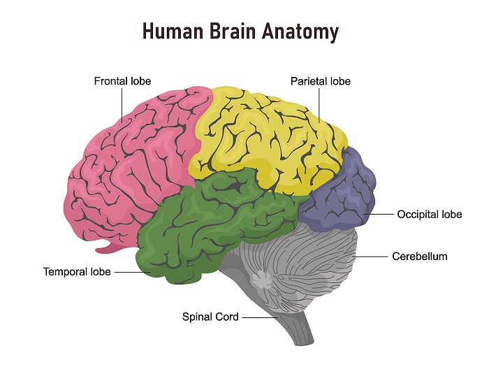
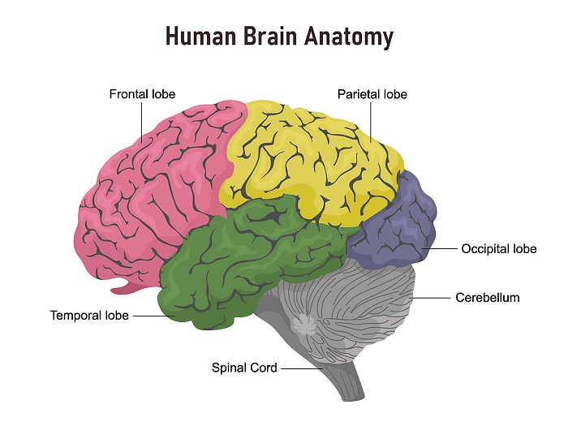

Amyotrophic Lateral Sclerosis



| More on ALS | |||
|---|---|---|---|
| Your brain | |||
 |
|||
|
|
||
Amyotrophic lateral sclerosis (ALS) and frontotemporal dementia (FTD) are part of a spectrum of pernicious progressive neurodegenerative diseases in which the gradual deterioration and death of neurons throughout the body lead to symptoms ranging from large-scale loss of motor function and muscle control to aphasia or loss of executive function. ALS in particular leads to the loss of motor function, but it can often be accompanied by cognitive deficits as well. Symptoms for ALS patients often start out as weakness in a limb that slowly develops over a period of weeks or months, followed by the development of weakness in another limb. These then progress over time to include muscle twitching and cramping, impairment of arm and leg use, tripping, fatigue, slurred speech, and difficulty breathing. Ultimately, paralysis of the respiratory system is often the cause of death for these patients, and this disease unfortunately currently has a 100% mortality rate due to the lack of a cure for it. There are currently treatments in progress, and I actually worked in a research lab at the Mayo Clinic in Florida where we were trying to develop cures for ALS based on the molecular aspects of the disease.
In looking to the molecular side of the disease, the molecular hallmark of ALS/FTD is TDP-43 pathology, where the normally nuclear RNA-binding protein TDP-43 mislocalizes to the cytoplasm and forms hyperphosphorylated and ubiquitinated insoluble aggregates. Due to the pervasiveness of TDP-43 pathology, with 97% of ALS cases and 45% of FTD cases being due to TDP pathology, as well as a genetic link between TDP-43 and ALS/FTD, it is likely that TDP-43 proteinopathy plays a key role in disease progression and pathogenesis, but the mechanisms and consequences of this interaction are still largely unclear. This pathology in ALS is common across both sporadic patient cases, where the disease arises with no prior family history or genetic precursors, and across familial cases, making it a promising target for treatments for patients.
Famous individuals who have suffered from this disease include Stephen Hawking and Lou Gehrig, which has also led to the disease being called Lou Gehrig's disease. There was also a fundraiser to fund research for cures for ALS known as the ALS ice bucket challenge that was very popular on social media years ago.
Overall, there are many potential treatments being created for individuals struggling with ALS, and so hopefully one day soon we will have a cure!
This free script provided by
JavaScript
Kit